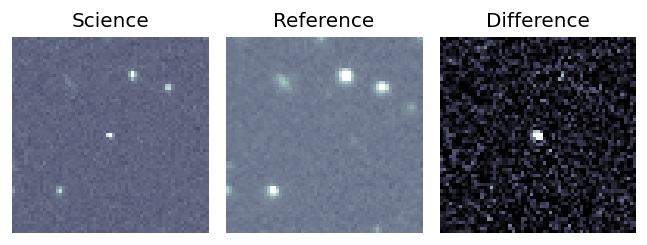
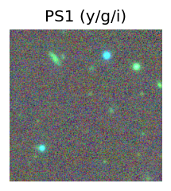
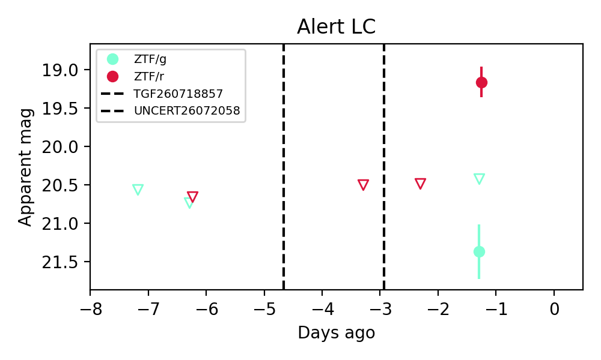
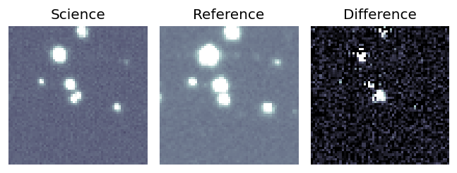
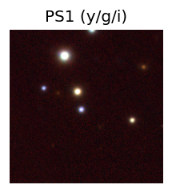
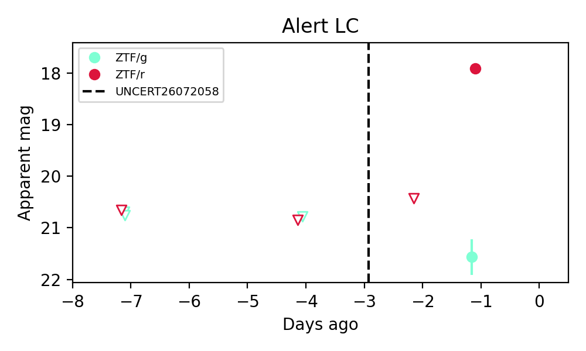

Candidate List 20260723Last night — ZTF: 3,942 passed basic cuts (177 young) · LSST: 0 passed basic cuts (0 young)Previous Day Next Day
Section 1: New Sources (age<1d) Section 2: Old (1-5d) sources observed last nightplaceholder
Section 1: New Afterglow/FBOT Cands Last Night (4)
1. [ZTF] ZTF18adjfcsn (FBOT?) [Back to Top] [Share] [Trigger Swift] [Fritz Alert] [Fritz Source] [Lasair]RA, Dec: 247.57182, 41.46094 16h30m17.24s, 41d27m39.37sGalactic (l, b): 65.57569, 43.40917 ext(g-r) = 0.009

TESS: Sectors [ 24 25 51 52 78 79 117]
PS1: 0 sources in 3 arcsec
LegacySurvey: 1 sources in 3 arcsec Closest: d = 1.27 arcsec, 175.4 deg (east of north) photoz=0.41 (68% bounds 0.29, 0.49), type=PSF peak abs mag = -23.82 (68% bounds -23.0, -24.29)

Rise Rate:
g: 1.43 mag/day
Fade Rate:
2. [ZTF] ZTF26abivqwv (Afterglow?) [Back to Top] [Share] [Trigger Swift] [Fritz Alert] [Fritz Source] [Lasair]RA, Dec: 261.25562, 45.6456 17h25m1.35s, 45d38m44.17sGalactic (l, b): 71.53854, 33.71916 ext(g-r) = 0.027

TESS: Sectors [ 24 25 26 40 51 52 53 78 80 117 118]
PS1: 0 sources in 3 arcsec
LegacySurvey: 1 sources in 3 arcsec Closest: d = 4.22 arcsec, 340.9 deg (east of north) photoz=0.51 (68% bounds 0.41, 0.7), type=REX peak abs mag = -23.21 (68% bounds -22.67, -24.04)

Extinction-corrected gr color:
From alerts: 2.18 +/- 0.41 mag
Consistent with synchrotron, g-r>0!
Rise Rate:
r: 1.25 mag/day
Fade Rate:
3. [ZTF] ZTF26abiwcvm (Afterglow?) [Back to Top] [Share] [Trigger Swift] [Fritz Alert] [Fritz Source] [Lasair]RA, Dec: 290.2152, -1.75984 19h20m51.65s, -1d-45m-35.41sGalactic (l, b): 34.72425, -7.34791 ext(g-r) = 0.704

TESS: Sectors [54 80]
PS1: 0 sources in 3 arcsec
LegacySurvey: 0 sources in 3 arcsec

Extinction-corrected gr color:
From alerts: -0.37 +/- 0.24 mag
Extinction-corrected gi color:
From alerts: -0.46 +/- 0.26 mag
Extinction-corrected ri color:
From alerts: -0.09 +/- 0.21 mag
Consistent with synchrotron, g-r>0!
Rise Rate:
g: 0.28 mag/day
r: 0.61 mag/day
i: 0.27 mag/day
Fade Rate:
4. [ZTF] ZTF26abizgcp (Afterglow?) [Back to Top] [Share] [Trigger Swift] [Fritz Alert] [Fritz Source] [Lasair]RA, Dec: 321.42304, 18.19608 21h25m41.53s, 18d11m45.88sGalactic (l, b): 69.34706, -22.6232 ext(g-r) = 0.066

TESS: Sectors [55 82 82]
SDSS (<15 kpc):Found SDSS phot-z: z=0.65; peak abs mag = -25.23
PS1: 0 sources in 3 arcsec
LegacySurvey: 1 sources in 3 arcsec Closest: d = 2.82 arcsec, 125.5 deg (east of north) photoz=0.06 (68% bounds 0.01, 0.22), type=PSF peak abs mag = -19.14 (68% bounds -15.55, -22.39)

Extinction-corrected gr color:
From alerts: 3.59 +/- 0.35 mag
Consistent with synchrotron, g-r>0!
Rise Rate:
r: 2.4 mag/day
Fade Rate:
Section 2: Older Sources Observed Last Night (4)
0. [ZTF] ZTF26abhycxx (FBOT?) [Back to Top] [Share] [Trigger Swift] [Fritz Alert] [Fritz Source] [Lasair]RA, Dec: 280.99357, 24.37805 18h43m58.46s, 24d22m40.97sGalactic (l, b): 54.17126, 12.39233 ext(g-r) = 0.127


TESS: Sectors [ 26 40 53 54 80 118 119]
PS1: 1 source in 3 arcsec Closest: d = 8.74 arcsec photoz=0.42+/-0.06 peak abs mag = -25.66
LegacySurvey: 0 sources in 3 arcsec

Extinction-corrected gr color:
From alerts: -0.42 +/- 0.06 mag
Rise Rate:
g: 2.02 mag/day
r: 2.04 mag/day
Fade Rate:
r: 0.06 mag/day
1. [ZTF] ZTF26abipuax (FBOT?) [Back to Top] [Share] [Trigger Swift] [Fritz Alert] [Fritz Source] [Lasair]RA, Dec: 278.37724, 21.28714 18h33m30.54s, 21d17m13.69sGalactic (l, b): 50.26407, 13.31759 ext(g-r) = 0.23


TESS: Sectors [ 26 40 53 80 118 119]
SDSS (<15 kpc):Found SDSS phot-z: z=0.12; peak abs mag = -19.39
PS1: 1 source in 3 arcsec Closest: d = 0.67 arcsec photoz=0.18+/-0.01 peak abs mag = -20.46
LegacySurvey: 0 sources in 3 arcsec

Extinction-corrected gr color:
From alerts: -0.11 +/- 0.21 mag
Consistent with synchrotron, g-r>0!
Rise Rate:
g: 0.34 mag/day
r: 0.42 mag/day
Fade Rate:
2. [ZTF] ZTF26abiqrbt (Afterglow?) [Back to Top] [Share] [Trigger Swift] [Fritz Alert] [Fritz Source] [Lasair]RA, Dec: 265.06953, -15.26501 17h40m16.69s, -15d-15m-54.02sGalactic (l, b): 11.06146, 8.17921 ext(g-r) = 0.441

TESS: Sectors [ 92 115 116 118]
PS1: 0 sources in 3 arcsec
LegacySurvey: 0 sources in 3 arcsec

Extinction-corrected gr color:
From alerts: -0.51 +/- 0.19 mag
Extinction-corrected gi color:
From alerts: -0.76 +/- 0.2 mag
Extinction-corrected ri color:
From alerts: -0.29 +/- 0.14 mag
Rise Rate:
g: 0.57 mag/day
r: 0.44 mag/day
i: 0.37 mag/day
Fade Rate:
i: 0.29 mag/day
3. [ZTF] ZTF26abirwwz (Afterglow?) [Back to Top] [Share] [Trigger Swift] [Fritz Alert] [Fritz Source] [Lasair]RA, Dec: 298.80799, 37.20251 19h55m13.92s, 37d12m9.05sGalactic (l, b): 72.72462, 4.64158 ext(g-r) = 0.405

TESS: Sectors [ 14 15 54 55 74 75 81 82 119 120]
PS1: 0 sources in 3 arcsec
LegacySurvey: 0 sources in 3 arcsec

Extinction-corrected gr color:
From alerts: -0.61 +/- 0.07 mag
Rise Rate:
g: 0.34 mag/day
r: 1.36 mag/day
Fade Rate:
r: 0.26 mag/day